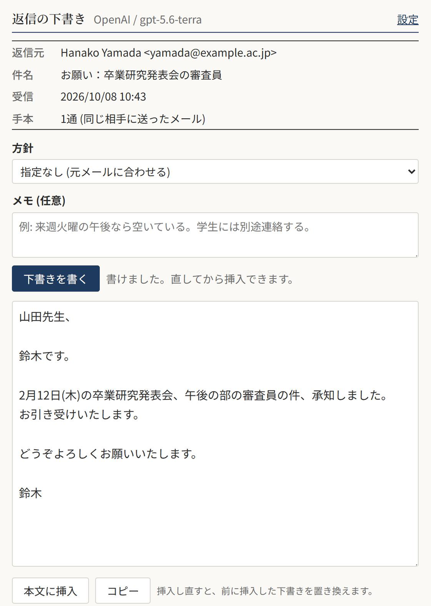

API は OpenAI と Anthropic (Claude) のどちらかを選びます。キーは自分で用意します。 ビルドの手順はなく、素の JavaScript で書いています。
reply-llm-0.1.0.xpi をダウンロード ソースを見る (GitHub)

動く環境
- Thunderbird 128 以上
- OpenAI か Anthropic の API キー
導入
- 上の xpi ファイルをダウンロードします。
- Thunderbird の ツール → アドオンとテーマ を開き、歯車のメニューから ファイルからアドオンをインストール を選んで xpi を指定します。
- アドオンの 設定 を開き、使う API を選んでキーを入れ、保存します。接続テスト でつながるか確かめられます。
ソースから入れる場合は、ツール → 開発者ツール → アドオンをデバッグ → 一時的なアドオンを読み込む で src/manifest.json を選びます。
この方法で入れたものは、Thunderbird を再起動すると消えます。xpi は src/pack.ps1 で作れます。
使い方
- 返信 (または全員に返信) で返信ウィンドウを開きます。
- ツールバーの封筒のボタン (返信の下書き) を押します。
- 表に出る返信元のメールを確かめます。同じ件名のメールが複数あっても、返信ウィンドウが持つ元メールの ID で取るので取り違えません。
- 方針 (引き受ける、断る、日程を調整する、など) を選び、必要なら メモ に事実を書きます。日程の候補や断る理由などです。
- 下書きを書く (Ctrl+Enter) を押します。出てきた下書きはその場で直せます。
- 本文に挿入 を押すと、引用部分の上に入ります。挿入し直すと、前に挿入した下書きを置き換えます。
ポップアップはほかの場所をクリックすると閉じますが、方針・メモ・下書きは返信ウィンドウごとに残ります。
下書きの方針
プロンプトは lib/prompts.js にあります。要点は次のとおりです。
- 宛名、名乗り、結び、句読点 (、。か ，．か) は、手本のメールに合わせる。
- 署名と引用は書かない。どちらも Thunderbird が付ける。
- 引き受けるかどうか、日程、金額など、書き手にしか決められないことは決めない。
[要確認: ○○]と書いて残す。 - 元のメールとメモにない事実を作らない。
設定の 下書きへの追加指示 に、自分の決まりを足せます。たとえば、学生宛ては“さん”付けにする、英語のメールは Best regards で結ぶ、などです。
API に送るもの
メールの本文と、自分が送ったメールの一部が API に送られます。学生や取引先の個人情報を含むメールもそのまま送られるので、所属先の規程と、各社の API のデータ利用方針を確かめてから使ってください。
| 内容 | 範囲 |
|---|---|
| 返信元のメール | 差出人・宛先・日時・件名・本文 (12,000字まで) |
| この返信の宛先 | To と CC、自分の名前とアドレス |
| 文体の手本 | 送信済みフォルダから、同じ相手に過去1年に送ったメールを新しい順に3通。本文だけで、引用と署名は削る。同じ相手に送ったことがなければ、直近2週間に送ったメールを使う |
| 方針とメモ | ポップアップで選んだもの、書いたもの |
手本の数は設定で変えられます。0 にすると手本は送りません。
構成
| ファイル | 内容 |
|---|---|
manifest.json | 権限と、返信ウィンドウのボタン (compose_action) |
lib/api.js | OpenAI と Claude のストリーミング呼び出し。SDK を使わず fetch で書いている |
lib/mail.js | 元メールと手本の取得、本文への挿入。引用の切り方を変えるならここ |
lib/prompts.js | 方針の選択肢とプロンプト。下書きの癖を変えるならここ |
lib/settings.js | 設定の読み込み |
popup/ | ボタンを押すと出る画面 |
options/ | API・キー・モデル・effort・手本の数・追加指示の設定画面 |
test/ | Thunderbird なしで画面を動かすための模擬環境 (xpi には入らない) |
pack.ps1 | xpi を作る PowerShell スクリプト |
Thunderbird なしで画面を確かめる
test/mock.html は、Thunderbird の API と LLM の応答を模擬して、本物の popup.js を動かします。
画面やプロンプトを直したときに、Thunderbird を再起動せずに確かめられます。図1もこの画面です。
file:// では動かないので、src でローカルサーバを立てて開きます。
python -m http.server 8765
# http://localhost:8765/test/mock.html を開く (?plain を付けるとテキスト形式の返信)ライセンスは The Unlicense です。自由に使い、直し、配ってかまいません。無保証で、使って生じた損害は補償しません。